شرح خطوة بخطوة مع لقطات من داخل النظام: تسجيل الحضور بالبطاقة،
إنهاء اليوم، إدارة الطلاب والبطاقات، الرحلات، التقارير، الإعدادات، والنسخ الاحتياطي.
الجهة
مدرسة النور النموذجية (بيانات تجريبية)
الإصدار
3.6.0 — Windows 10/11 64-bit
تاريخ الدليل
نوفمبر 2026
نوع المستند
دليل استخدام وتدريب
جميع الأسماء والأرقام والبطاقات الظاهرة في الصور بيانات تجريبية أُنشئت للتدريب فقط.
المحتويات
فهرس الدليل
الدليل مرتب بترتيب العمل اليومي: التهيئة، الدخول، التسجيل، ثم المتابعة والإدارة.
1
قبل البدءماذا يفعل النظام ومتطلبات التشغيل
2
التثبيت وأول تشغيلمدرسة جديدة أو الانضمام إلى جهاز
3
تسجيل الدخولكلمة المرور، البطاقة، واستعادة المشرف
4
لوحة اليومالمؤشرات والمسح السريع وجدول الطلاب
5
تسجيل الحضور والانصرافالبطاقة والكاميرا والإدخال اليدوي
6
إنهاء حضور اليومتثبيت الغياب ومنع التسجيل بعد الإغلاق
7
الطلاب والاستيرادالإضافة والتعديل والاستيراد الجماعي
8
بطاقات الدخولبطاقة 5.5×9 سم والطباعة والاستبدال
9
السائقون والرحلاتفتح الرحلة ومسح الطلاب وتأكيدها
10
التقارير والتصديرثمانية تقارير وتصدير CSV كامل
11
الإعدادات والمستخدمونأيام الدراسة والأدوار وكلمات المرور
12
النسخ الاحتياطي والاستعادةالنسخ المحلي واليومي والسحابي
13
سجل التدقيقمن فعل ماذا ومتى
14
لوحة سطح المكتبالمزامنة والنسخ السحابي والاستيراد
15
الصلاحيات والأدوارمن يستطيع فعل ماذا
16
حل المشكلاتأعطال شائعة وحلول سريعة
17
نصائح الأمانقبل تسليم النظام للمدرسة
كيف تقرأ الدليل؟ الأرقام الزرقاء خطوات مرتبة. الصور مأخوذة من نسخة تجريبية.
المربعات الملوّنة: أخضر = نصيحة، أزرق = ملاحظة، برتقالي = تحذير يستحق الانتباه.
الفصل الأول
1. قبل البدء
نظام الحضور والانصراف تطبيق سطح مكتب يعمل محليًا داخل المدرسة، ويسجّل حضور الطلاب
بالبطاقة أو الكاميرا أو الإدخال اليدوي، ويدير الرحلات والتقارير والنسخ الاحتياطي
دون الحاجة إلى اتصال دائم بالإنترنت.
ماذا يغطي النظام؟
لوحة يومية تعرض إجمالي الطلاب، الحاضرين، الغائبين، ومن سجّل انصرافه.
بطاقات دخول QR للطلاب والسائقين ومستخدمي النظام، مع طباعة بمقاس 5.5×9 سم.
رحلات السائقين: مسودة تُراجع ثم تُطبَّق مرة واحدة على سجل اليوم.
إن ظهرت نافذة SmartScreen ولم تكن شهادة المدرسة مثبّتة بعد، اختر «مزيد من المعلومات» ثم «تشغيل على أي حال» — يُفضَّل أن يثبّت مسؤول المدرسة شهادة التوقيع أولًا.
اتبع خطوات المثبّت: مكان التثبيت ← تثبيت ← إنهاء، ثم افتح التطبيق من قائمة ابدأ أو من الاختصار على سطح المكتب.
للاستخدام من USB أو دون تثبيت، استخدم النسخة المحمولة School-Attendance-Portable-3.6.0-x64.exe.
أين تُحفظ البيانات؟
في النسخة المثبّتة: %APPDATA%\school-attendance-desktop\data
في النسخة المحمولة: مجلد SchoolAttendanceData بجوار ملف التشغيل.
لا تحذف هذا المجلد يدويًا، واعمل نسخة منه قبل أي نقل أو إعادة تثبيت.
أول تشغيل: مدرسة جديدة
اختر «تهيئة مدرسة جديدة».
أدخل اسم المدرسة واسم النظام كما سيظهران في أعلى الشاشة.
استورد ملف الطلاب إن كان جاهزًا، أو أضفهم لاحقًا من شاشة الطلاب.
احفظ كلمة المرور المؤقتة للمشرف التي تظهر لك، وستُطلب منك عند أول دخول.
جهاز إضافي على الشبكة
شغّل التطبيق على الجهاز الجديد واختر «الانضمام إلى جهاز».
من الجهاز الأساسي افتح «سطح المكتب ← المزامنة» وانسخ مفتاح المزامنة.
أدخل في الجهاز الجديد عنوان الجهاز الأساسي مثل http://192.168.1.10:43118 ومفتاح المزامنة.
بعد الانضمام يعمل الجهاز مستقلًا، وتُدمج تغييراته مع بقية الأجهزة عند توفر الشبكة.
تحذير: افتح منفذ التطبيق على الشبكة الخاصة فقط، ولا تعرضه على الإنترنت.
مفتاح المزامنة لا يُبثّ تلقائيًا؛ المزاوجة تتم يدويًا من لوحة سطح المكتب.
الفصل الثالث
3. تسجيل الدخول
يفتح التطبيق على شاشة الدخول. يمكن الدخول باسم المستخدم وكلمة المرور، أو ببطاقة مستخدم QR، أو بحساب Google إذا فعّله المشرف.
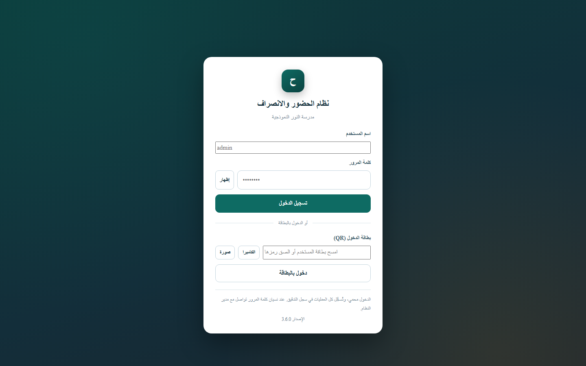
شكل 1: شاشة تسجيل الدخول — اسم المستخدم وكلمة المرور، أو بطاقة الدخول، أو حساب Google.
الدخول باسم المستخدم
اكتب اسم المستخدم، ومثالُه الافتراضي admin.
اكتب كلمة المرور، ويمكنك الضغط على أيقونة العين للتحقق منها.
اضغط «تسجيل الدخول».
عند أول دخول تُطلب منك كلمة مرور جديدة (8 خانات على الأقل). غيّرها ثم أكمل.
لماذا تُطلب كلمة المرور عند أول دخول فقط؟ لأن كلمة المرور المؤقتة تُصدر مرة واحدة.
بعد تغييرها تعمل الكلمة الجديدة مباشرة، ولا تتكرر المطالبة في المرات القادمة.
الدخول بالبطاقة
امسح بطاقة المستخدم في حقل «بطاقة الدخول (QR)» ثم اضغط «دخول».
أو استخدم زر «الكاميرا» لمسح البطاقة أمام الكاميرا، أو زر «صورة» لاختيار صورة QR من الجهاز.
نسيت كلمة مرور المشرف؟
من شاشة الدخول اضغط «نسيت كلمة مرور المشرف؟».
أكّد العملية في النافذة الأولى.
ستظهر نافذة موافقة مسؤول Windows (UAC). المستخدم العادي لا يستطيع إتمامها.
بعد الموافقة تُصدر كلمة مرور مؤقتة مرة واحدة، وتُلغى كل الجلسات المفتوحة.
ادخل بالكلمة المؤقتة وغيّرها فورًا.
تحذير: لا تشارك كلمة المرور، ولا تترك جلسة مشرف مفتوحة على جهاز مشترك.
استخدم زر «تسجيل الخروج» في أعلى الشاشة عند الانتهاء.
الفصل الرابع
4. لوحة اليوم
هذه هي الشاشة الرئيسية التي تُفتح بعد الدخول. تعرض ملخص اليوم الحالي وسجل الطلاب، ومنها تبدأ التسجيل.
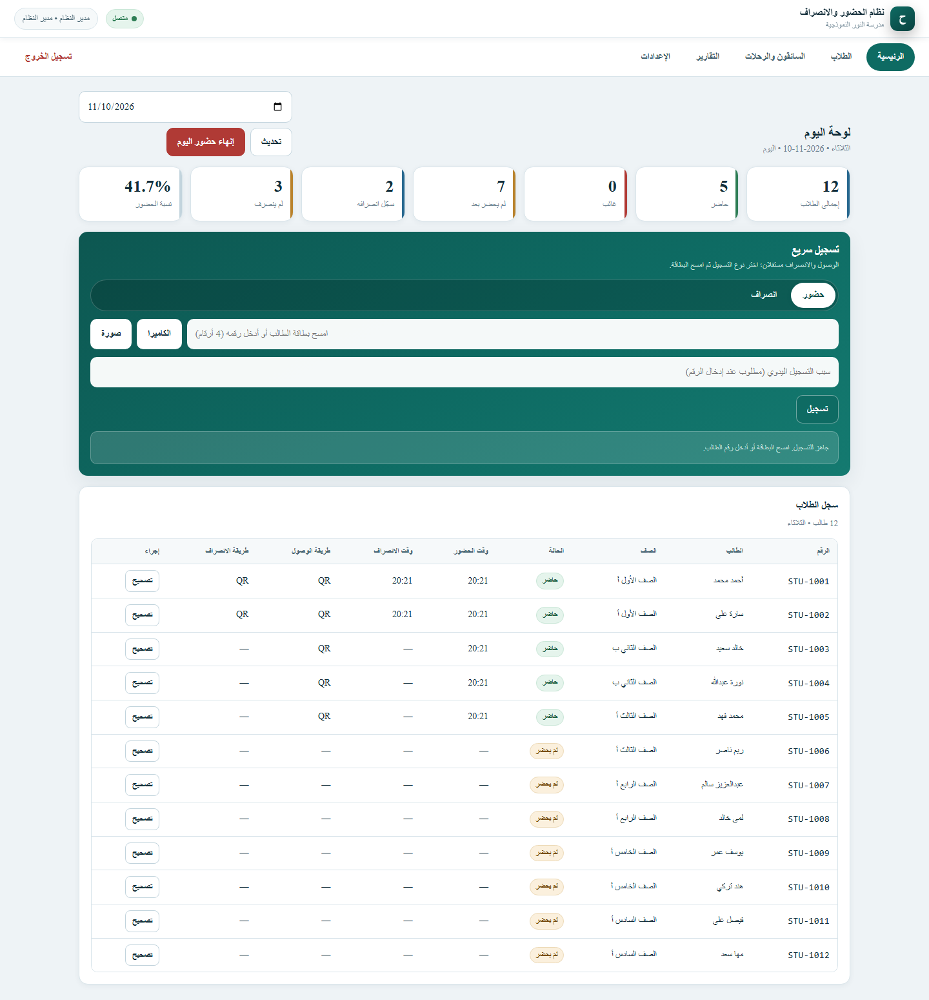
شكل 2: لوحة اليوم — التاريخ، مؤشرات الحضور، تسجيل سريع، وجدول الطلاب.
مؤشرات اليوم
المؤشر
المعنى
إجمالي الطلاب
عدد الطلاب النشطين في سجل اليوم.
حاضر
من سُجّل وصوله اليوم، سواء بالبطاقة أو الكاميرا أو يدويًا.
غائب
يظهر بعد إنهاء اليوم، ويشمل كل من لم يسجّل وصوله.
لم يحضر بعد
طلاب ما زال اليوم مفتوحًا ولم يُسجَّل وصولهم.
سجّل انصرافه
من سُجّل خروجه من المدرسة.
لم ينصرف
حاضرون لم يُسجَّل انصرافهم بعد.
نسبة الحضور
نسبة الحاضرين إلى المسجّلين في اليوم.
أدوات أعلى الصفحة
تاريخ السجل: لعرض يوم سابق. لا يمكن اختيار تاريخ مستقبلي.
تحديث: يعيد قراءة بيانات اليوم من قاعدة البيانات.
إنهاء حضور اليوم: يظهر لمن يملك صلاحية الإغلاق فقط، ويُشرح في الفصل السادس.
قسم التسجيل السريع
زرّا «حضور» و«انصراف» يحددان نوع التسجيل قبل المسح.
حقل المسح يستقبل قارئ USB أو الكتابة اليدوية لرقم الطالب.
«الكاميرا» لمسح QR مباشرة، و«صورة» لاختيار صورة من الجهاز.
الإدخال اليدوي يتطلب كتابة سبب واضح (5 أحرف على الأقل).
نصيحة: اترك المؤشر داخل حقل المسح؛ قارئ USB يكتب الرقم كأنه لوحة مفاتيح
ويُنفّذ التسجيل مباشرة عند نهاية القراءة.
الفصل الخامس
5. تسجيل الحضور والانصراف
اختر نوع التسجيل أولًا، ثم امسح بطاقة الطالب. يبقى الوصول والانصراف مستقلين؛
تسجيل الوصول لا يمنع تسجيل الانصراف لاحقًا.
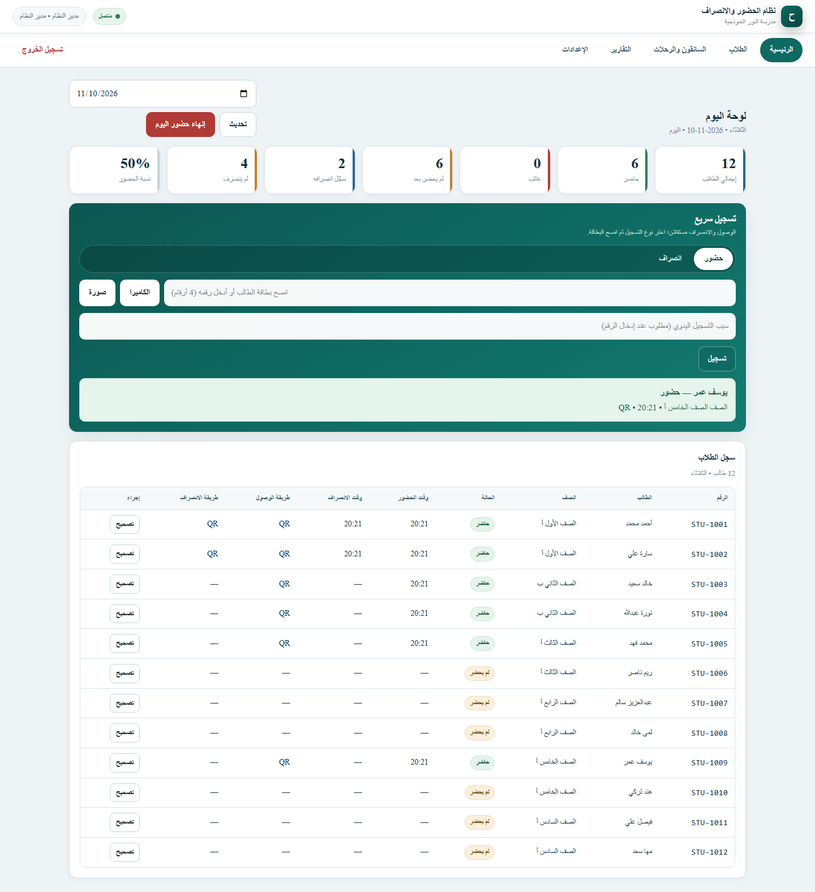
شكل 3: بعد المسح تظهر بطاقة نتيجة توضح الاسم والصف وطريقة التسجيل والوقت، دون عرض رمز البطاقة الخام.
خطوات التسجيل
اختر «حضور» أو «انصراف» من أعلى قسم التسجيل السريع.
امسح البطاقة بقارئ USB، أو اكتب رقم الطالب ثم Enter، أو استخدم الكاميرا أو الصورة.
تظهر بطاقة النتيجة أسفل الحقل: اسم الطالب، الصف، طريقة التسجيل، والوقت.
كرر العملية مع بقية الطلاب؛ يُحدَّث الجدول والمؤشرات تلقائيًا.
الخصوصية: لا يعرض النظام رمز البطاقة الخام بعد المسح، بل نتيجة التسجيل فقط.
الرموز محفوظة في الخادم كبصمات، ولا يمكن استرجاع رمز بطاقة صدرت سابقًا.
حالات متوقعة
الحالة
ما يحدث
الطالب مسجّل مسبقًا
تظهر رسالة أن وصول الطالب مسجّل اليوم، ولا يتكرر السجل.
بطاقة ملغاة أو مجهولة
يُرفض المسح ويُسجَّل في سجل التدقيق.
إدخال يدوي بلا سبب
يُرفض التسجيل حتى تُكتب أسباب واضحة.
بعد إنهاء اليوم
لا يُقبل وصول جديد؛ استخدم التصحيح من الجدول.
تصحيح سجل خاطئ
من جدول الطلاب اضغط «تصحيح» بجانب الطالب.
عدّل وقت الحضور أو الانصراف، أو امسح أحدهما.
اكتب سبب التصحيح (5 أحرف على الأقل) ثم احفظ.
يُسجَّل التصحيح في سجل التدقيق مع القيمة قبل وبعد.
الفصل السادس
6. إنهاء حضور اليوم
في نهاية الدوام اضغط «إنهاء حضور اليوم» أعلى لوحة اليوم. هذه الخطوة تُثبّت
حالة اليوم وتعتبر كل من لم يسجّل وصوله غائبًا.
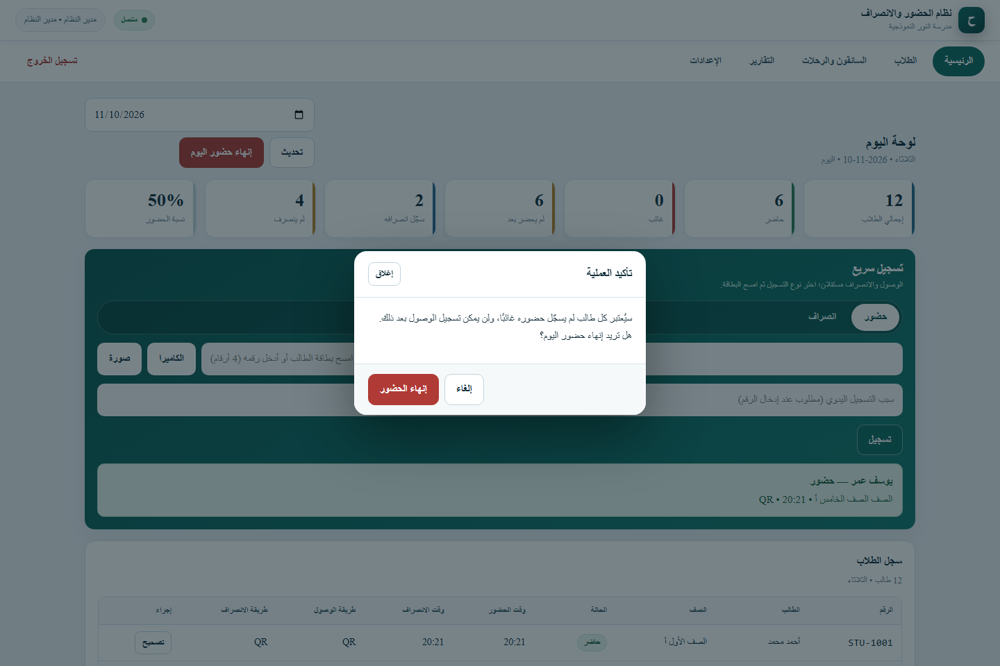
شكل 4: نافذة التأكيد قبل إنهاء اليوم — لا يتم الإغلاق إلا بعد الضغط على «إنهاء الحضور».
ماذا يحدث بعد التأكيد؟
تتحول حالة الطلاب غير المسجّلين إلى غائب.
يُمنع تسجيل وصول جديد لهذا اليوم.
تُحدَّث مؤشرات لوحة اليوم، وتصبح نسب الحضور قابلة للحساب في التقارير.
يُسجَّل الإغلاق في سجل التدقيق مع عدد الغائبين واسم المنفّذ.
تحذير: لا توجد إعادة فتح لليوم بعد إغلاقه. إن حدث خطأ، استخدم
«تصحيح» لسجل الطالب نفسه مع كتابة السبب. راجع الجدول قبل التأكيد.
الفصل السابع
7. الطلاب والاستيراد
شاشة الطلاب هي مرجع أسماء الطلاب وصفوفهم وأرقام بطاقاتهم. من زر واحد يمكنك
إضافة طالب، تعديل بياناته، أو إصدار بطاقة له.
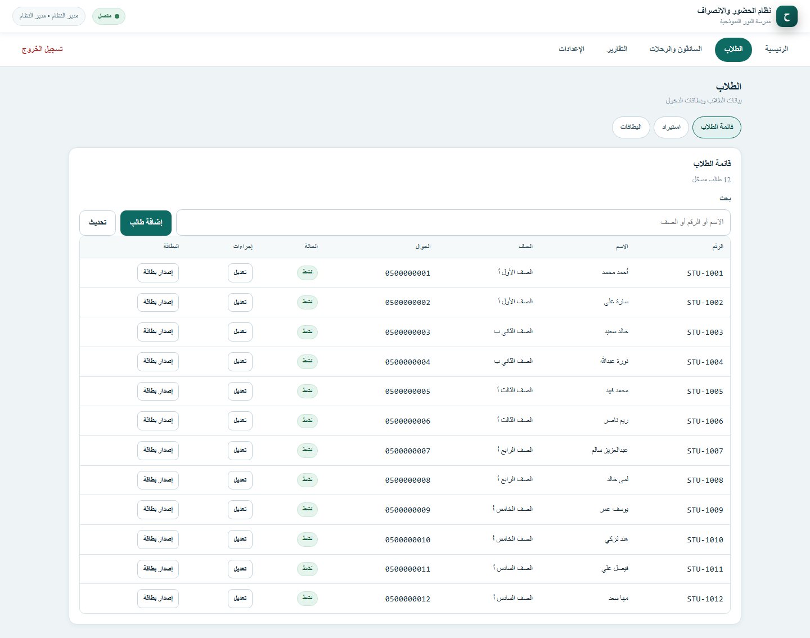
شكل 5: قائمة الطلاب — بحث، إضافة، استيراد، وإصدار بطاقة لكل طالب.
إضافة طالب
اضغط «إضافة طالب» أعلى القائمة.
أدخل رقم الطالب: أربعة أرقام مثل 1001، أو رمز بطاقة قديم مثل STU-1001.
أدخل الاسم والصف، والجوال اختياري.
اترك «الطالب نشط» مفعّلًا ثم احفظ.
قواعد مهمة: رقم الطالب واسمه يجب ألا يتكررا. رقم الطالب ثابت بعد الإنشاء،
ويمكن تعديل بقية البيانات فقط. الطالب غير النشط لا يظهر في سجل اليوم.
الاستيراد الجماعي
افتح تبويب «استيراد» داخل شاشة الطلاب.
ألصق الصفوف بصيغة: الرقم، الاسم، الصف، الجوال — كل سطر طالب واحد.
يمكنك تنزيل قالب CSV لضبط الأعمدة.
اضغط «استيراد الطلاب». إذا كان أي سطر غير صحيح يُرفض الاستيراد بالكامل.
نصيحة: لاستيراد ملف Excel جاهز، استخدم «سطح المكتب ← استيراد الطلاب»
في تطبيق سطح المكتب، ثم راجع القائمة والصفوف قبل بدء اليوم.
الفصل الثامن
8. بطاقات الدخول وطباعتها
لكل طالب أو سائق أو مستخدم بطاقة QR. البطاقة المطبوعة بمقاس 5.5×9 سم،
ويظهر فيها الاسم أعلى البطاقة، والصف أسفل الاسم، ورمز QR في الأسفل. لا تُطبع
أي أرقام أو رموز نصية على البطاقة.
إصدار بطاقة
من شاشة الطلاب اضغط «البطاقات» ثم «إصدار بطاقة» — أو «إصدار بطاقة» بجانب الطالب مباشرة.
اختر نوع البطاقة: طالب، سائق، أو مستخدم.
اختر صاحب البطاقة، وأضف ملاحظة اختيارية.
اضغط «إصدار البطاقة».
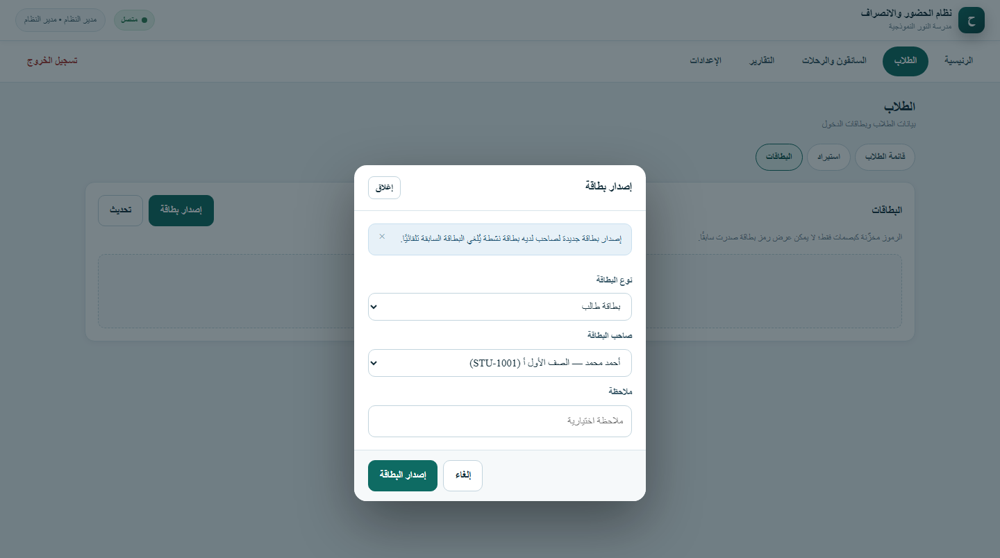
شكل 6: نموذج إصدار بطاقة — النوع والصاحب والملاحظة.
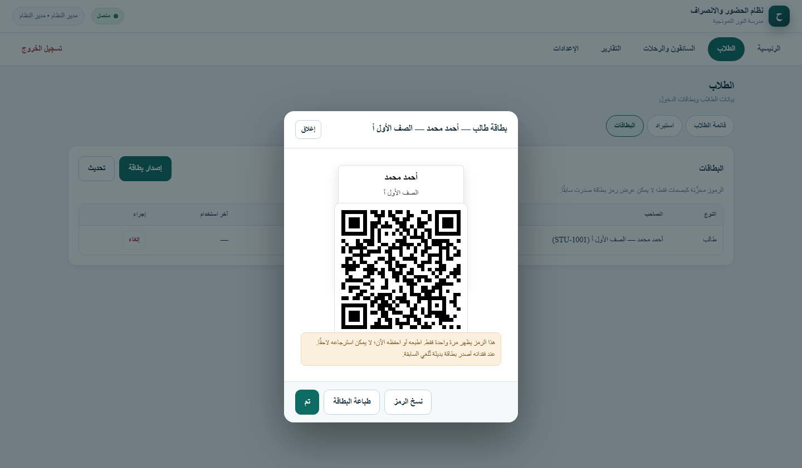
شكل 7: معاينة البطاقة 5.5×9 سم بعد الإصدار، مع أزرار النسخ والطباعة. يُخفى رمز الإصدار في هذا الدليل.
مهم: رمز البطاقة يظهر مرة واحدة فقط بعد الإصدار. اطبعه أو احفظه فورًا؛
لا يمكن استرجاعه لاحقًا. عند فقدانه أصدر بطاقة بديلة، وسيُلغي النظام البطاقة السابقة تلقائيًا.
طباعة البطاقة
اضغط «طباعة البطاقة» في نافذة المعاينة.
اختر الطابعة، ومقاس الورق A4.
اضبط المقياس على 100% وأوقف «ملاءمة الصفحة» حتى لا يتغير مقاس 5.5×9 سم.
أوقف رؤوس الصفحات وتذييلاتها إن ظهرت، ثم اطبع.
قص البطاقة على الحدود ثم غلّفها إن أردت.
إدارة البطاقات
قائمة البطاقات تعرض النوع والصاحب والحالة (نشطة أو ملغاة) وتاريخ الإصدار.
يمكن إلغاء بطاقة من زر «إلغاء» بعد التأكيد.
بطاقات المستخدمين تُصدر من «الإعدادات ← المستخدمون» بزر «بطاقة».
لا تظهر الرموز في القائمة لأن النظام يحفظ بصمة الرمز فقط، وهذا يحمي البطاقات حتى لو نُسخ ملف البيانات.
الفصل التاسع
9. السائقون والرحلات
إضافة سائق
افتح «السائقون والرحلات» ثم تبويب «السائقون».
اضغط «إضافة سائق».
أدخل رقم السائق: أربعة أرقام تبدأ بالرقم 9، مثل 9001.
أدخل الاسم والمنطقة والجوال والهوية، واختر الطلاب المرتبطين بالسائق.
أصدر بطاقة للسائق من زر «بطاقة» إن كان سيستخدم المسح في الرحلات.
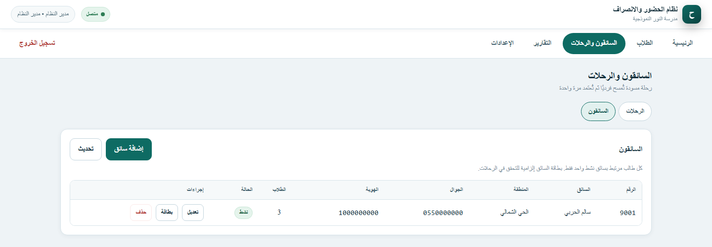
شكل 8: قائمة السائقين — الرقم والمنطقة والجوال وعدد الطلاب المرتبطين.
فتح رحلة
افتح تبويب «الرحلات» واضغط «فتح رحلة جديدة».
اختر نوع الرحلة: حضور أو انصراف.
امسح بطاقة السائق أو أدخل رقمه. يمكن للمشرف اختيار السائق من القائمة.
امسح الطلاب فرديًا ضمن الرحلة؛ يُضاف كل طالب إلى مسودة الرحلة.
راجع قائمة الطلاب ثم اضغط «تأكيد الرحلة».
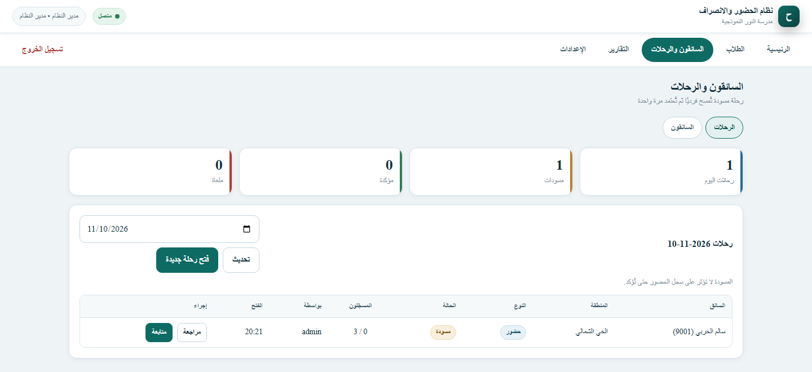
شكل 9: شاشة الرحلات — ملخص الرحلات وفتح رحلة جديدة وقائمة المسودات.
المسودة لا تؤثر على الحضور. يمكنك مسح الطلاب ومراجعتهم ثم تأكيد الرحلة
دفعة واحدة. التأكيد يُطبَّق مرة واحدة فقط، وإعادة الضغط لا تكرر التسجيل.
نصيحة: استخدم رحلة الحضور للطلاب الذين يصلون مع السائق دفعة واحدة،
ثم أكمل بقية الطلاب بالمسح الفردي في لوحة اليوم.
قواعد الرحلة
الحالة
السلوك
مسودة
قابلة للتعديل والإلغاء، ولا تغيّر سجل اليوم.
مؤكدة
تُطبَّق على سجل اليوم ولا تعود مسودة.
رحلة حضور بعد الإغلاق
ممنوعة؛ لأن اليوم أُغلق ولا يُقبل وصول جديد.
طالب غير موجود في اليوم
يُستبعد عند التأكيد ويظهر ضمن التعارضات.
الفصل العاشر
10. التقارير والتصدير
تقدم شاشة التقارير ثمانية أنواع جاهزة. اختر النوع والفترة والتصفية ثم اضغط
«عرض التقرير».
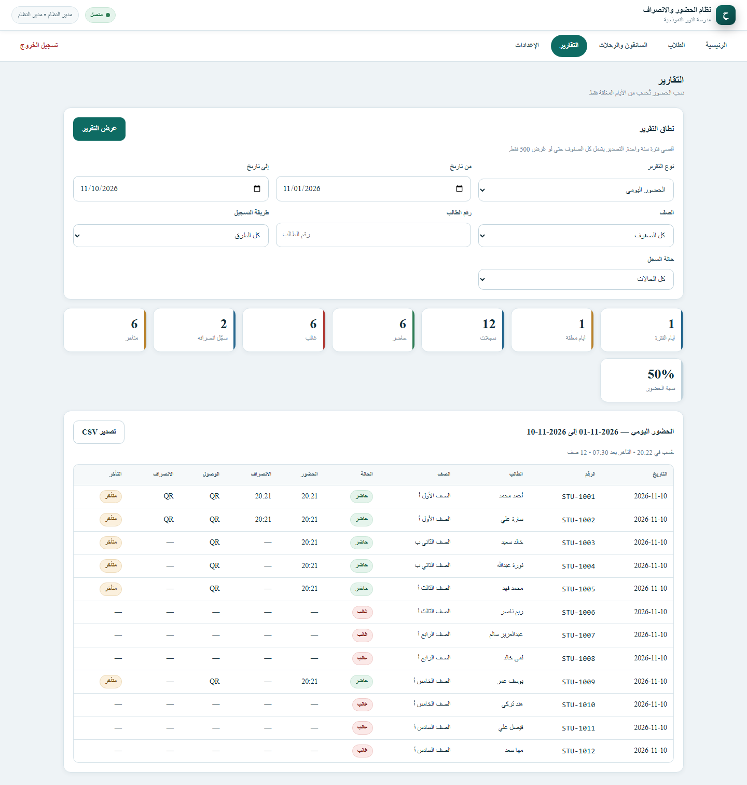
شكل 10: تقرير الحضور اليومي بعد إغلاق اليوم — ملخص الأرقام وجدول الطلاب.
أنواع التقارير
النوع
الاستخدام
الحضور اليومي
سجل كل طالب في الفترة المحددة مع وقت الوصول والانصراف.
ملخص الأيام
إجمالي الحاضر والغائب والمنصرف لكل يوم.
حضور الطلاب
تجميع لكل طالب خلال الفترة.
حضور الصفوف
مقارنة الصفوف ونسب الحضور.
طرق التسجيل
توزيع التسجيلات بين QR واليدوي والسائق وولي الأمر.
الغياب
الطلاب الغائبون في الأيام المغلقة.
رحلات السائقين
عدد الرحلات والطلاب لكل سائق.
كل الرحلات
تفاصيل الرحلات وحالتها ووقت تأكيدها.
التصفية والفترة
أقصى فترة سنة واحدة، ولا يمكن اختيار تاريخ مستقبلي.
يمكن التصفية بالصف أو رقم الطالب أو طريقة التسجيل أو الحالة أو رقم السائق حسب نوع التقرير.
الجدول يعرض أول 500 صف، بينما يشمل التصدير كل الصفوف.
ملاحظة: إحصاءات «حاضر/غائب» تُحسب من الأيام المغلقة فقط. إن ظهرت صفرًا
وأنت ترى صفوفًا في الجدول، فالمقصود أن اليوم ما زال مفتوحًا — أنهِ اليوم ثم أعد التقرير.
التصدير
شغّل التقرير أولًا.
اضغط «تصدير CSV» أعلى الجدول.
يُحفظ الملف بترميز UTF-8 ويفتح مباشرة في Excel، ويشمل كل الصفوف لا المعروض فقط.
الفصل الحادي عشر
11. الإعدادات والمستخدمون
شاشة الإعدادات مقسومة إلى تبويبات: عام، المستخدمون، النسخ الاحتياطي، سجل التدقيق،
وكلمة المرور. تظهر التبويبات حسب صلاحيات الحساب.
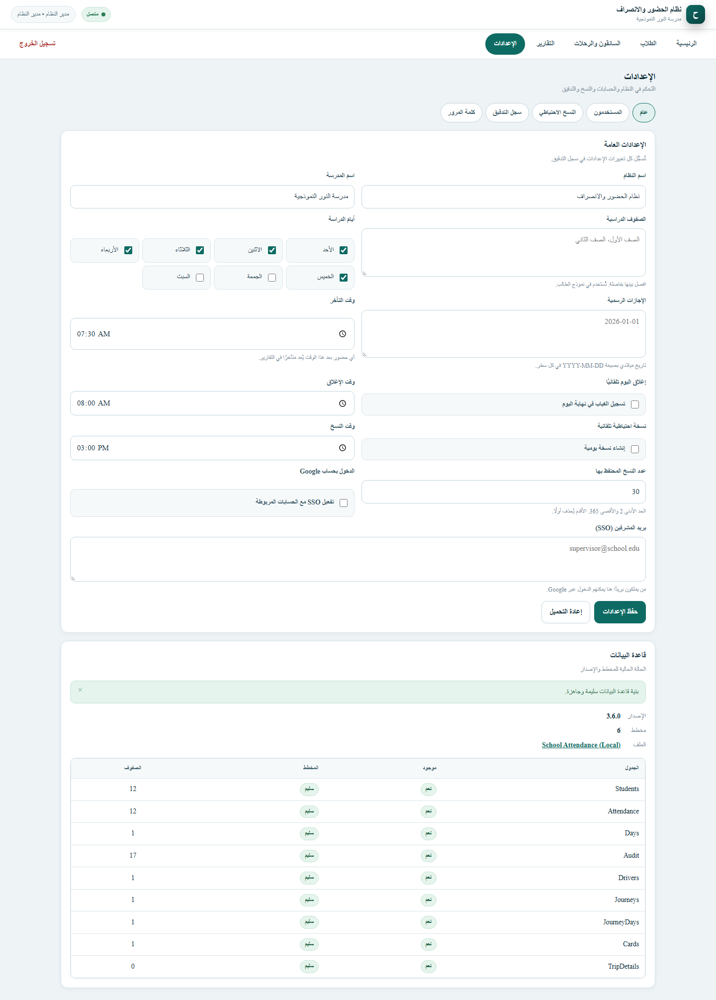
شكل 11: الإعدادات العامة — بيانات المدرسة وأيام الدراسة وأوقات الدوام والنسخ التلقائي.
الإعدادات العامة
اسم المدرسة واسم النظام: يظهران في الشريط العلوي وشاشة الدخول.
الصفوف وأيام الدراسة: تحدد الأيام التي يُفتح فيها اليوم تلقائيًا.
وقت التأخر: يُستخدم في التقارير لوسم الوصول المتأخر.
الإغلاق التلقائي ووقته: يغلق اليوم مرة واحدة عند بلوغ الوقت؛ يعمل الفحص الدوري كل عشر دقائق.
النسخ التلقائي ووقته وعدد النسخ المحفوظة: تحدد سياسة النسخ اليومي.
الدخول بحساب Google: يتطلب مطابقة بريد المستخدم في حسابه.
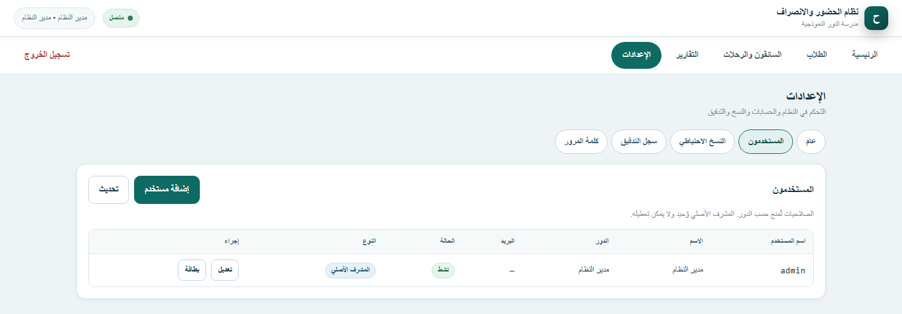
شكل 12: المستخدمون — إضافة حساب، تعديل دوره، أو إصدار بطاقة دخول له.
إضافة مستخدم
افتح تبويب «المستخدمون» واضغط «إضافة مستخدم».
أدخل اسم المستخدم والاسم الكامل والدور والبريد إن لزم.
اترك «نشط» مفعّلًا، واحفظ. تُسلَّم كلمة المرور المؤقتة للمستخدم ليغيّرها عند أول دخول.
لإصدار بطاقة دخول للمستخدم اضغط زر «بطاقة» بجانبه.
حماية: لا يمكن تعطيل المشرف الأصلي أو آخر مدير نظام. تعطيل حساب أو تغيير
دوره أو كلمة مروره يُبطل جلساته المفتوحة فورًا.
كلمة المرور
من تبويب «كلمة المرور» يغيّر المستخدم كلمته الحالية. عند نسيانها، يعيد
المشرف تعيينها من تبويب المستخدمين أو عبر استعادة المشرف من شاشة الدخول.
الفصل الثاني عشر
12. النسخ الاحتياطي والاستعادة
النسخ الاحتياطي هو خط الدفاع الأخير عن بيانات الحضور. أنشئ نسخة يدوية بعد كل
تعديل كبير، واعتمد النسخ اليومي للنسخ الروتيني.
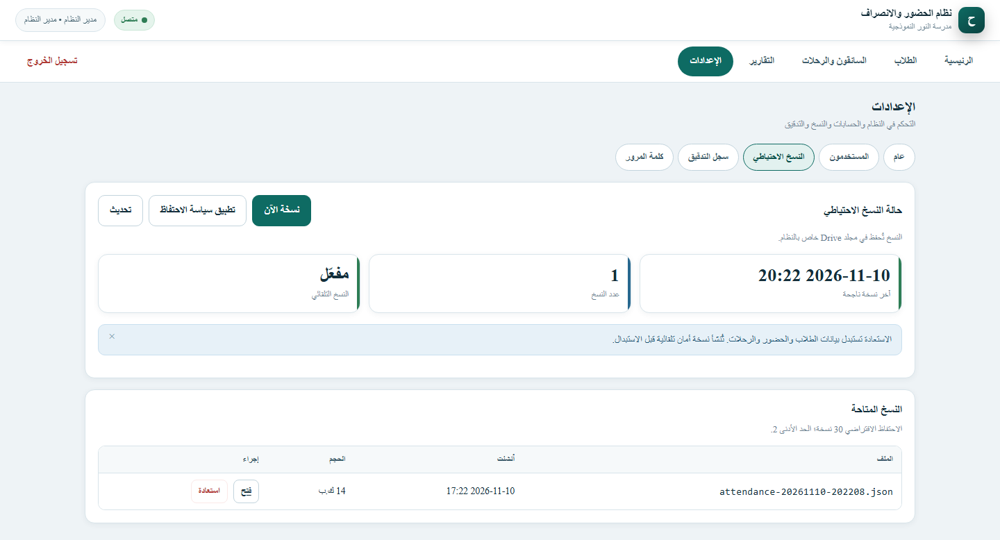
شكل 13: النسخ الاحتياطي — حالة آخر نسخة، عدد النسخ، وقائمة الملفات المتاحة.
إنشاء نسخة الآن
افتح «الإعدادات ← النسخ الاحتياطي».
اضغط «نسخة الآن» وانتظر ظهور وقت آخر نسخة ناجحة.
تظهر النسخة في جدول «النسخ المتاحة» مع حجمها وتاريخها.
النسخ اليومي والاحتفاظ
يُشغَّل النسخ التلقائي مرة واحدة يوميًا حسب وقت النسخ في الإعدادات العامة.
«تطبيق سياسة الاحتفاظ» يقلّم النسخ الأقدم من الحد، ويلغي مسودات الرحلات القديمة، وينظّف الجلسات.
بعد الاستعادة، راجع لوحة اليوم وقائمة الطلاب والبطاقات.
تحذير: الاستعادة تستبدل بيانات الطلاب والحضور والرحلات بالنسخة المختارة.
لا تستعد نسخة قديمة أثناء دوام الطلاب إلا بعد إبلاغ المشرف.
نسخة سحابية: من «سطح المكتب ← النسخ السحابي» أدخل رابط Web App للسكربت
وكلمة النسخ السحابي التي تحصل عليها من getCloudBackupSecret في محرر السكربت.
النسخة تُحفظ في Drive صاحب السكربت، وتبقى النسخة المحلية JSON/XLSX متاحة دائمًا.
الفصل الثالث عشر
13. سجل التدقيق
يسجّل النظام كل عملية مهمة: الدخول، المسح، إصدار البطاقات وإلغاءها، فتح الرحلات
وتأكيدها، تعديل الإعدادات، تصحيح الحضور، والنسخ الاحتياطي.
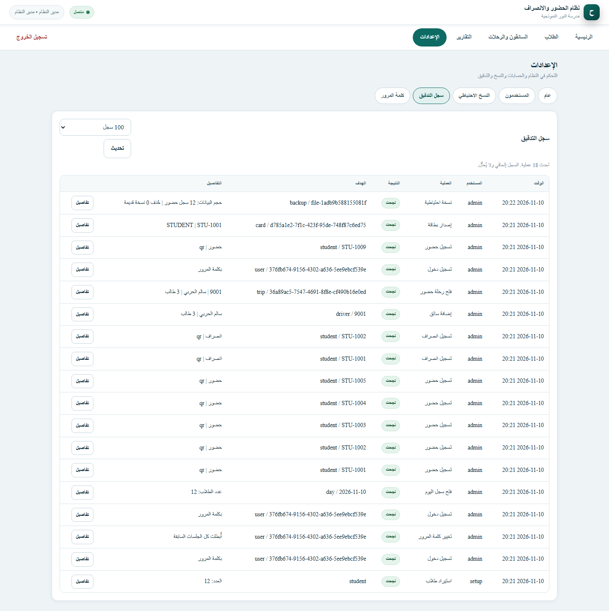
شكل 14: سجل التدقيق — المستخدم والوقت والعملية والنتيجة والهدف.
الاستخدام
افتح «الإعدادات ← سجل التدقيق».
اختر عدد السجلات المعروضة (100 أو أكثر) ثم اضغط «تحديث».
اضغط «تفاصيل» بجانب أي عملية لعرض القيمة قبل وبعد والسبب إن وُجد.
مراجعة أسبوعية: راجع محاولات الدخول الفاشلة وإلغاء البطاقات والتصحيحات
اليدوية؛ فهي أكثر العمليات التي تحتاج انتباه المشرف. ولا يمكن تعديل السجل من
الواجهة: كل تصحيح يُسجَّل كعملية جديدة مع سببه، ويبقى أثر السابق في التفاصيل.
الفصل الرابع عشر
14. لوحة سطح المكتب
لوحة «سطح المكتب» متاحة في تطبيق Windows لحساب بدور admin فقط.
تجمع المزامنة بين الأجهزة، والنسخ السحابي، واستيراد الطلاب من ملف، ومعلومات الجهاز.
المزامنة بين الأجهزة
افتح «سطح المكتب ← المزامنة».
انسخ مفتاح المزامنة من الجهاز الأساسي — لا يُبثّ عبر الشبكة.
في الجهاز الآخر اضغط «إضافة جهاز» وأدخل عنوان الجهاز الأساسي والمفتاح.
تتم المزامنة الدورية كل 45 ثانية، ويمكن الضغط على «مزامنة الآن» لتسريعها.
راقب العدّاد حتى يكتمل، ولا تغلق الجهاز أثناء أول مزامنة كبيرة.
النسخ السحابي
في محرر السكربت شغّل getCloudBackupSecret بحساب المالك، وانسخ القيمة.
ثبّت شهادة التوقيع الداخلية على الجهاز، ثم أعد تشغيل ملف التثبيت.
قبل طلب الدعم
دوّن اسم الشاشة والخطوة التي توقفت عندها، ورسالة الخطأ إن ظهرت.
خذ نسخة احتياطية من الإعدادات ← النسخ الاحتياطي إن كان النظام يعمل.
أرفق ملف السجل من مجلد data/logs إن طُلب منك.
لا ترسل كلمات المرور أو مفتاح المزامنة أو ملف حساب الخدمة.
نقل البيانات إلى جهاز جديد: أغلق التطبيق، انسخ مجلد البيانات كاملًا إلى الجهاز
الجديد في المسار نفسه، ثم افتح التطبيق وتحقق من الطلاب والبطاقات قبل بدء اليوم.
الفصل السابع عشر
17. نصائح الأمان قبل التسليم
غيّر كلمة المرور المؤقتة للمشرف عند أول دخول، واستخدم كلمة طويلة لا تُشارك.
راجع المستخدمين: عطّل الحسابات غير المستخدمة، وامنح أقل صلاحية تكفي.
احمِ مفتاح المزامنة ومفتاح حساب الخدمة. لا ترسلهما عبر البريد أو المحادثات.
لا تعرض منفذ التطبيق على الإنترنت. المزامنة للشبكة المحلية الموثوقة فقط.
أنشئ نسخة احتياطية قبل أي تحديث أو نقل جهاز، واحفظ نسخة خارج الجهاز.
راجع سجل التدقيق أسبوعيًا، خصوصًا محاولات الدخول الفاشلة وإلغاء البطاقات.
سجّل الخروج من الأجهزة المشتركة، ولا تترك شاشة المشرف مفتوحة.
ثبّت شهادة التوقيع الداخلية على أجهزة المدرسة لتقليل تحذيرات التشغيل.
احتفظ بالبطاقات في مكان آمن، وأصدر بديلًا فورًا عند فقدان أي بطاقة.
تذكير: النسخة الاحتياطية ليست بديلًا عن كلمة مرور قوية. الوصول إلى مجلد
البيانات يعني الوصول إلى النظام؛ احمِ جهاز المشرف بحساب Windows مستقل.
قائمة تحقق سريعة
البند
تم؟
كلمة مرور المشرف مغيّرة
☐
حسابات المناوبين والمسجّلين جاهزة
☐
الطلاب مستوردون والبطاقات مطبوعة
☐
أيام الدراسة وأوقات الدوام مضبوطة
☐
النسخ التلقائي مفعّل ونسخة تجريبية ناجحة
☐
شهادة التوقيع مثبّتة على أجهزة المدرسة
☐
✓
نظام الحضور والانصراف — 3.6.0
دليل استخدام مصوّر لتطبيق سطح المكتب.
جميع الصور والبيانات في هذا الدليل تجريبية، ولا تحتوي بيانات طلاب حقيقيين.
للدعم الفني: راجع سجل التدقيق وملفات السجل قبل التواصل مع مسؤول النظام.